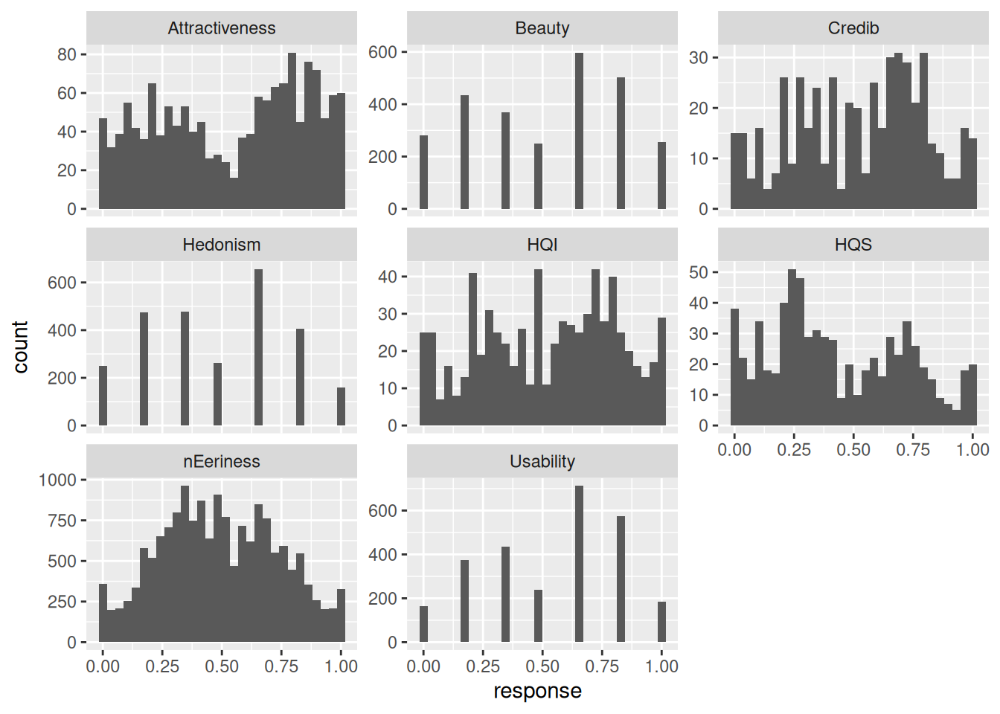
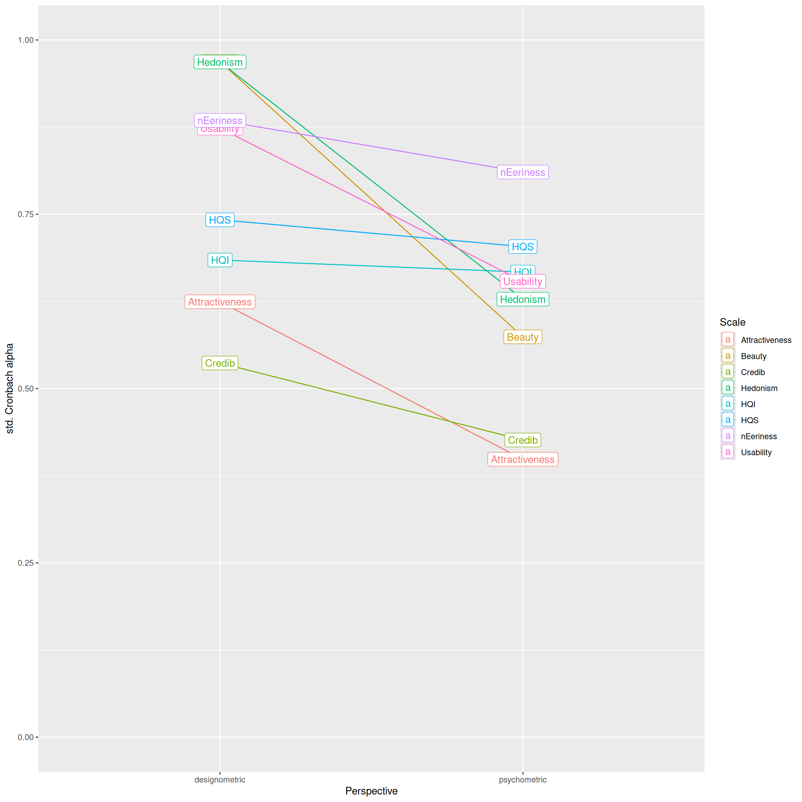
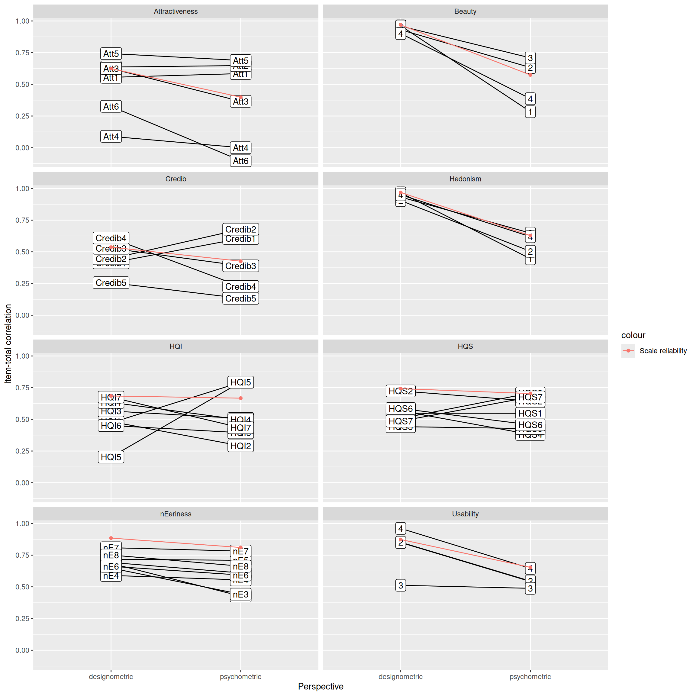
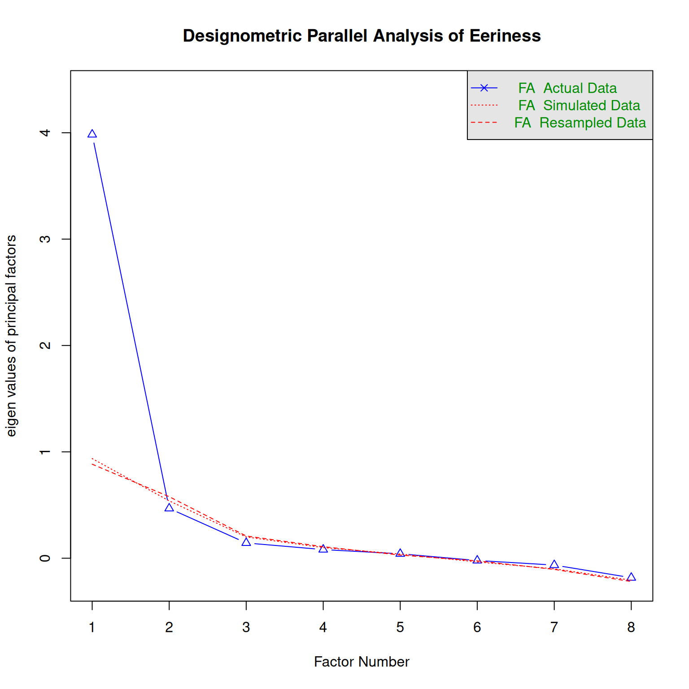
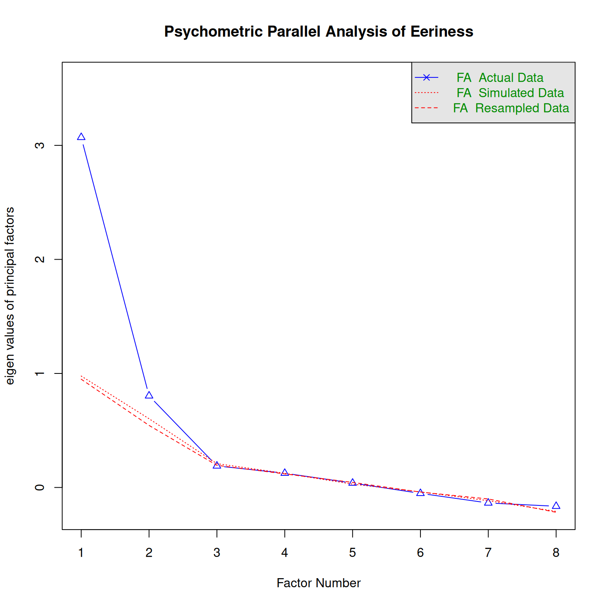
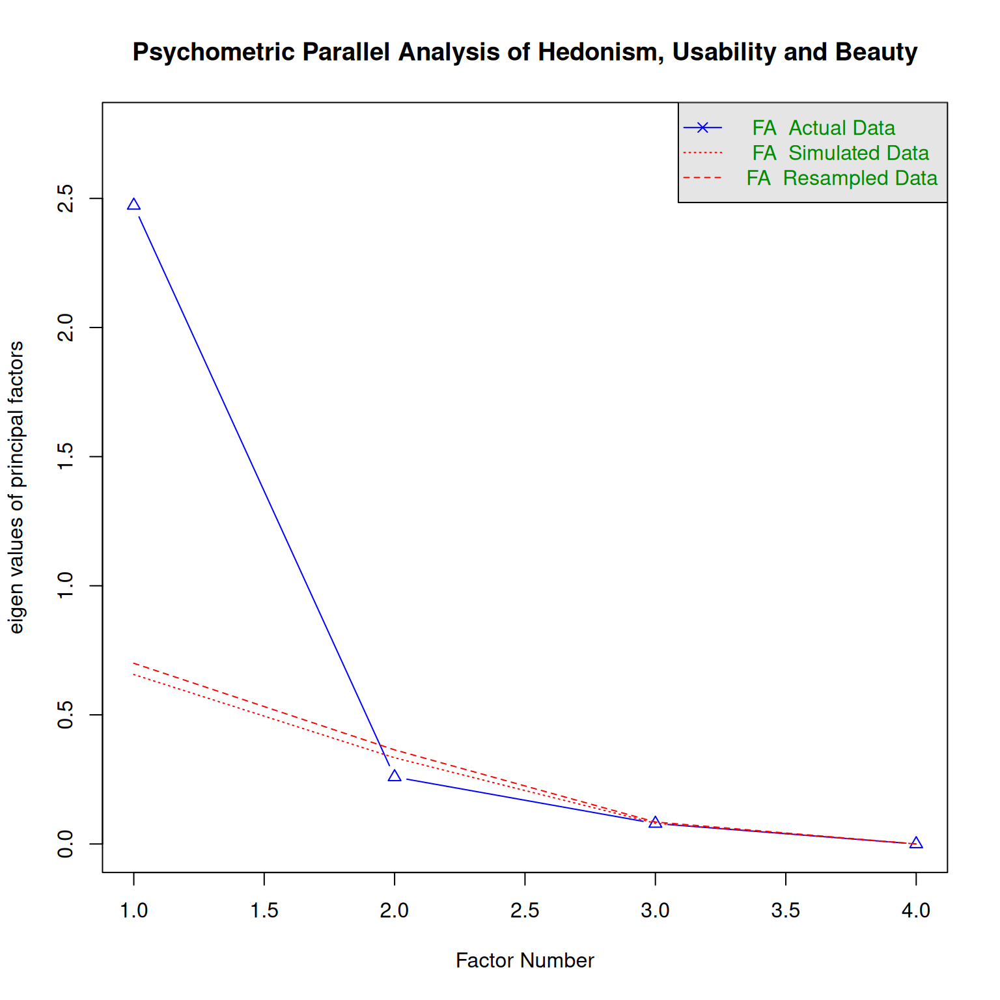

library(tidyverse)
library(psych)
library(mascutils)
library(printr)
#library(lavaan)
options(mc.cores = 8)
purp.analysis <- T2 model <- M_1_design
#' Psychometric/designometric response matrix from long designometric data
#'
#' @param x long designometric data
#' @returns psychometric response matrix.
#' @examples
#' ldmx <- expand.grid(Design = 1:7, Part = 1:5, Item = 1:3)
#' ldmx$response <- rbeta(105, 2, 2)
#' rm_pmx(ldmx)
#' rm_dmx(ldmx)
rm_pmx <- function(x)
x |>
group_by(Part, Item) |>
summarize(mean_resp = mean(response)) |>
ungroup() |>
arrange(Item) |>
spread(Item, value = mean_resp) |>
select(-Part)
#' @rdname rm_pmx
rm_dmx <- function(x)
x |>
group_by(Design, Item) |>
summarize(mean_resp = mean(response)) |>
ungroup() |>
spread(Item, value = mean_resp) |>
select(-Design)
#' Psychometric function wrappers
#'
#' @param Data long designometric data
#' @returns Results per Perspective and Scale
alpha_ci <- function(Data){
Scale <- str_c(distinct(Data, Scale)$Scale)
model_psych <-
psych::alpha(rm_pmx(Data), check.keys = FALSE, n.iter = 100)$boot |>
as_tibble() |>
mutate(Perspective = "psychometric")
model_design <-
psych::alpha(rm_dmx(Data), check.keys = FALSE, n.iter = 100)$boot |>
as_tibble() |>
mutate(Perspective = "designometric")
out <-
bind_rows(model_psych,
model_design) |>
select(Perspective, std.alpha) |>
group_by(Perspective) |>
summarize(center = mean(std.alpha),
lower = quantile(std.alpha, .025),
upper = quantile(std.alpha, .975)) |>
mutate(Scale = Scale) |>
mascutils::go_first(Scale, Perspective)
out
}
item_rel <- function(Data){
#Data <- D_1 |> filter(Scale == "HQI")
Scale <- str_c(distinct(Data, Scale)$Scale)
model_psych <-
psych::alpha(rm_pmx(Data), check.keys = FALSE)$item.stats |>
as_tibble(rownames = "Item") |>
mutate(Perspective = "psychometric")
model_design <-
psych::alpha(rm_dmx(Data), check.keys = FALSE)$item.stats |>
as_tibble(rownames = "Item") |>
mutate(Perspective = "designometric")
out <-
bind_rows(model_psych,
model_design) |>
mutate(Scale = Scale) |>
go_first(Scale, Item, Perspective) |>
arrange(Scale, Item, Perspective)
out
}
parallel_analysis <- function(Data, n, persp, scales){
if (persp == "D") {
data <- rm_dmx(Data)
main <- str_c("Designometric Parallel Analysis of ", scales)
}
if (persp == "P") {
data <- rm_pmx(Data)
main <- str_c("Psychometric Parallel Analysis of ", scales)
}
psych::fa.parallel(data,
fa = "fa",
fm = "minres",
nfactors=n,
main=main)
}3 The designometric perspective and the psychometric fallacies
3.1 Introduction
In modern industrial practice, rating scales have their place as an always available and cheap method for comparing or benchmarking designs. In what is a decision process, the everyday value of a rating scales stands and falls with two properties: validity and reliability.
Developing a valid and reliable rating scale is quite an undertaking. Psychometrics is the science of assigning numbers to persons so that they can be compared in performance, or functioning more generally. Traditionally, this served to measure skills, such as mathematical intelligence or comprehension of language. With the time, researchers also became more interested in elusive properties of persons, such as psycho-social tendencies (known as the Big Five).
After the landrush phase of the UX revolution, Bargas-Avila & Hoernbaek ((Old wine in new bottles)) counted hundreds of new rating scale instruments. Few of these instrument underwent the same scrutiny as, for example, a rating scale for psycho-pathological diagnosis would have to. But, frequently some psychometric tools were used at one point during development time, for example for producing reliability estimates or splitting items into subscales. Also users of designometric instruments sometimes perform their own basic evaluation when checking data sanity.
The logical argument developed in this paper is, that instruments in design research, in particular rating scales, exist to rank designs. It follows that the development of designometric instruments must involve a large sample of designs to test their ranking capability. The consequence is that desgnometric data forms a design-by-person-by-item box, not a flat response matrix as required by psychometric tools.
The practical argument in this paper is that psychometric tools can very well be used with designometric data by collapsing the box into a design-by-item response matrix. The result is only a change in semantics, as statistics for ranking persons now refer to the ranking of designs.
We call it the psychometric fallacy, when designometric rating scales are evaluated using psychometric response matrices, as it contradicts the logical argument that a sample of designs must be involved. Many alleged designometric instruments were, partly at least, developed under the psychometric fallacy, which makes their capability to rank designs questionnable.
Practićally all psychometric tools take a flat response matrix as input. Since the designometric data box can be reduced in both directions: a designometric response matrix and a psychometric, the consequences of the psychometric fallacy can be explored by using both matrices in the same type of analysis and compare the results.
In this paper, we define the designometric perspective and demonstrate how basic psychometric tools can properly be used during development of designometric scales, as well as in practice. The case for the psychometric fallacy is opened with a simulation study, before the practical implications are explored deeper using designometric data obtained on eight commonly used UX rating scales.
3.1.1 Psychometrics
The primary practical uses of psychometric instruments are either about making cost-effective prediction about a person. A good score in a written drivers test predicts that a person will make fewer errors on the road which decreases the chance of collisions. Psycho-diagnostic rating scales are often used in screening tests, e.g. for depression, whereas performance tests are used in competitive situations, such as personnel selection or education.
When it only takes a single probe to accurately estimate the body temperature of a person, why are psychological tests and math exams so repetitive? The primarily reason is that psychological instruments are highly noisy, be it self-report scales, reaction times or physiological measures. If one cannot improve the instrument or experiment, taking repeated measures is an effective measns to improve the precision of the measurement. This idea goes back to Classic Test Theory, which solves the problem by decomposing every measure into a relevant systematic component and a nuisance error component. By the law of large numbers, the systematic component re-occurs and is strengend with every measurement, whereas the error is fully random, cancelling itself out in the long run. When certain conditions are met, it is possible to create an arbitrary precise estimate by adding more repetitions.
3.1.1.1 Item selection
The first challenge when designing a psychometric inventory is to understand the domain, ideally in terms of involved areas of psychological functioning. Based on the domain analysis, the researcher creates a candidate item pool, which is usually much larger than the targeted set of items. Up to this point, the process is mostly qualitative, divergent and creative.
Subsequently, item selection is carried out, which ranks the item pool by some selective criteria, such as item reliability or sensitivity. This often is an iterative process, with the goal to find a reasonably accurate and universal way of measuring a skill. According to CTT, the errors of multiple items cancel each other out, given that they fully agree on the systematic component. This can be the case with extremely repetitive items, such as trials in the simple reaction time task. But in practice, item scores only agree to some degree on what they measure. Scale reliability by Cronbach \(\alpha\) is a statistic to measure the overall level of agreement in a sample of items. For the purpose of selection, a basic procedure for item selection can be derived, where reliability of the full item set is compared to the data set excluding item \(i\). If scale reliability improves by removing the item, the item is marked for removal. The same can be done repeatedly by correlating an item score against the total score.
The procedure of step-wise removal is adequate when the property under measurement is atomic. When more components are involved, the results of step-wise reduction can even be erratic to the point that a relevant part of the construct has been deleted. . Therefore, factor-analytic methods are often used as a means to separate components into multiple sub scales with good properties.
3.1.1.2 Factor Structures
In modern psychometrics, the relation between a properties of persons and multiple measure is known as the distinction between latent variables (not observable, but true) and indicator variables (observable, but imperfect). Many instruments carry a complex domain structure, where multiple latent variables are used to cover different aspects. A prominent example is the Big 5 inventory, which claims that social behaviour can be predicted by five psycho-social traits, each of which is assessed by a main scale divided into multi-item subscales. For the five main traits a high level of independence can be expected by the way the Big5 was constructed, but the subscales should correlate more strongly.
While the primary aim of domain analysis is to gain sufficient coverage of the domain, it often at least indicates a possible structure for a multi-item instrument. In some cases, a domain analysis is driven by a theoretical structure in the first place. For example, a rating scale for mental workload could very well be based on the multiple-resource theory, which predicts that different sensory modes are processed independently, translating into one scale per sensory mode.
- Auditory load: It is difficult to understand the signal tones.
- Visual load: The amount of visual information can be overwhelming.
Prior structures often also emerge from qualitative results in mixed-method psychometric processes. …
When prior structures exist, Confirmatory Factor Analysis (CFA) is the most recommended technique to critically assess prior assumptions about the latent variable structure. In the above example of the Big5 inventory, a hierarchical CFA model could be used to verify that the main scales are largely independent, whereas subscales correlate more strongly. Once a good model is established, CFA also supercedes Cronbach \(\alpha\), as CFA procides item loadings, which can be used for item selection.
When a robust prior structure is not available, a common technique for finding new structures is Exploratory Factor Analysis, which requires the researcher to name the number of factors and how these factors are correlated. Several methods have been proposed to identify the optimal number of factors before-hand. Early tools used the decline in Kaiser eigenvalues and the visual elbow criterion, whereas modern tools use resampling techniques to determine the optimal number of factors. The second choice to make is scale rotation. Orthogonal rotation applies, when the components are largely independent, such as arithmetic skills and text comprehension. For true sub scales a significant correlations between underlying factors is very likely, and oblique rotation should be used, instead.
3.1.1.3 The Response Matrix
All psychometric methods mentioned so far have in common that measures are provided in form of response matrices, where rows identify with participants and columns with items. A common operation during item selection is to estimate consistency on the full response matrix, remove a dubious item from the matrix to see if this improves consistency. EFA takes a response matrix as input and produces item loadings for it. For multi-scale data CFA tools take response matrix with named columns as input, together with a formula to group items to factors. …
The idea of response matrices is most pronounced in item response theory (IRT), a psychometric approach rivaling classic test theory and factors analysis. In IRT, each cell in the response matrix is seen as an encounter between an item and a participant, from which a measure arises. Items, like participants, are seen as individuals, with different response characteristics during the encounter. Desired item characteristics can be formalized as part of an IRT model, and then rigorously be tested on data. In the most simple (and therefore strictest) model of Rasch, the probability of success in a person-task encounter depends only on the difference between task difficulty and the person ability. More complex IRT models allow more subtle item characteristics, and sophisticated tools have been developed to detect and prevent biases, such as differential item functioning.
For all levels of sophistication or schools of thought, what counts during scale development is that item of a test are well-behaved. In the same way teachers use multiple tests to estimate a student’s skill with adequate accuracy, many responses are needed to precisely assess the characteristics of an item during development time. This is what creates the demand for the enormous sample sizes, for which psychometric development is most feared for.
3.1.1.4 Sample sizes
The enormous sample sizes consumed during psychometric scale validation have several causes:
- Psychometric techniques tend to have many parameters and by the rule that the number of independent observations must at least match the number of parameters, a lower boundary can be established. A 24 item three-way EFA already produces 72 parameters. But, during scale validation, the number of items is often three times larger, which adds up.
- With noisy data certain estimation procedures need a lot of data to converge properly, for example in conditional maximum likelihood estimation.
- When a structure is desired, but no prior structure exists, EFA can be used to find factors. But the consequence is that the data set is consumed. To confirm the found structure by CFA, a new sample is required.
- The main areas of psychometric research are education and clinical diagnosis, where a rating scale or test can have a significant impact on a person’s life. These instruments ought to be extra-hardened against biases and require the greatest scrunity. For item in a PISA test, proof is required that it has the same characteristics all around the globe.
3.1.2 Designometrics
Everything said above is essentially rooted in mathematical theory, and therefore independent of any semantics. Formally, constructing rating scales to rank humans should be not much different to constructing a usability metric for websites. When a UX scale is used to decide between designs A and B in industrial practice, it is legit to ask how precise the measurements are. Indeed, designometric scales can efficiently be constructed and evaluated using existing psychometric tools, such as Cronbach \(\alpha\), factor analysis techniques ans IRT models for maximum rigor.
There are just two differences: First, in psychometrics the entity to be ranked is persons, whereas designometric applications one or more designs get numbers attached. Second, a psychometric measure is an encounter of a person with an item, whereas a designometric measure is an encounter of a design with a person and an item. The three-way encounter and designs being subject to measurement is what defines designometric situations.
3.1.2.1 The designometric perspective
A complete designometric data set is a cross-product of three samples: designs, users and items. It forms a “response box”, rather than a matrix, and can not directly be processed with psychometric tools. During the process of item selection and factorizing, design-by-item response matrices are needed. A practical solution is to average across the Person factor, which produces a flat response matrix, which takes the place of the psychometric response matrix and researchers can use it with standard psychometric tools to select proper items and find good structures.
Only the meaning of parameters changes. If a design is evaluated under designometric perspective, a high score predicts that a robot face will make a good appearance. If a designometric scale gets a high reliability score, this means that smaller samples are required to compare designs at a given level of precision. To create a consistent designometric scale, the items must inter-correlate strongly, which means they must be referring to design features that coincide.
Take as an example a hypothetical scale to measure trustworthiness of robot faces, with two sub-scales, realism of the design and likability. The impression of realism can be triggered by different features of the face, such as skull shape, details in the eyes region and skin texture. For a proper scale on realism, it would be required that these features correlate, and this essentially is a property of the robot face design process. It is a quite strong assumption that the effort a robot face designers puts into the eyes region must be strongly correlated with the effort put into skin texture, but by using psychometric models with designometric data, assumptions like theses can be tested.
3.1.2.2 Designometric sampling
During psychometric scale development, a substantial sample of designs is required to drive item selection and factorizing. This can be a huge problem, depending on the class of designs. For e-government websites a large design sample will be easier to come by than a sample of human-like robots or self-driving cars.
When Design takes the place of Person, it is implied that items must now be well-behaved in ranking designs, and substantial samples of designs are now required to prove that. This can be a minor or huge problem, depending on the class of designs. For e-government websites a large design sample will be easier to come by than a sample of human-like robots or self-driving cars.
A connected problem is that the designometric perspective participant-level information is reduced, but they are still involved in the designometric encounter. In the special case that scales are used for first impression ratings, it is possible to rund cross-product complete designometric encounters. For example, when we used the Eeriness scale on artificial faces, a single observation only took around 4 seconds, making it relatively easy to fill the designometric box with data, even repeatedly ((BT Robbin Koopmans)).
When a real interactive experience is subject of the measure, a measurent can take from several minutes to hours and a complete designometric encounter becomes impractical. A way to mitigate this problem is to use an experimental design that is planned incomplete. Essentially, a planned incomplete validation study has all participants encounter only a partition of the design sample. For example a study consisting of a sample of 100 designs let every participant encounter a different set of ten designs. As long as all designs are covered by at least one participant, this will result in a complete design-by-item matrix after collapsing along participants.
A variation of planned incomplete studies is to successively build the sample of designs. This is especially useful, when dealing with emerging classes of designs. This happened in the BUS-11 studies, where initially it was difficult to build a substantial sample, before it became more common.
3.1.2.3 The psychometric fallacy
Designometric scales can be developed and validated with established psychometric tools, when using proper design x item response matrices and a sufficiently large sample of designs to prove that items are well behaved. In contrast, many designometric instruments have not been validated using a large sample of designs, but rather on a psychometric matrix. This we call the psychometric fallacy.
Formally, a designometric box can produce a psychometric response matrix by averaging over Design. When a scale validation study in design research is under the psychometric fallacy, validation metrics such as item reliability may be meaningless for the purpose of ranking designs. Rather, the metric will refer to the capability of the item to discriminate persons by their sensitivity to the design feature in question. For example, a scale for comparing designs by beauty would become a scale to rank persons by how critical they are with respect to interface beauty. This is not the same and in the next section we show by simulation that the differences between designometric and psychometric perspectives can be dramatic.
During the scale development process, the psychometric fallacy appears in two forms, one is repairable, whereas the other is fatal. We speak of a repairable psychometric fallacy, when the validation study properly collected designometric data, but used psychometric response matrices for validation. This can be repaired by redoing the analysis now using a designometric matrix.
A study that did not collect a sample of designs, but used only a single or very few designs fell for the fatal psychometric fallacy. In these cases, researchers have failed to recognize a simple truth: The capacity to discriminate between designs can impossibly be validated on a single design. Every alleged designometric instrument, where this has happened during the validation phase, cannot be trusted.
Recall that psychometric validations require large samples of participants! Similar sample sizes will be required for designs when validating designometric instruments. So, even validation studies that included multiple designs, may in practice not be repairable, because the sample of designs is too small for that type of analysis (e.g. factor analysis). To give an example MacDorman (XY) validated the Godspeed Index, a common inventory to evaluate robotic designs. While scale reliability was assessed under a psychometric perspective, validity was correctly assessed using a sample of four designs. This allowed the authors to do a rough test on the ranking capabilities of their scales, but would not be suitable assess more detailed metric properties of the scale.
As a milder form run-time psychometric fallacy appears when an instrument is used in practice to take measures on a single design. The result will inevitable look like a psychometric response matrix and, given that publication rules (e.g. APA guidelines) often require to report some psychometric properties, it may be tempting for the researcher to run a psychometric test on reliability. While the run-time fallacy does not have the same impact as development-time fallacies, it may have cause some head aches when a validated instrument seems to have poor reliability.
In the following section, we construct a case by simulation, showing that psychometric and designometric perspectives can result in dramatically different results. In the remainder of the study, we will use data from past experiments to evaluate how strong the deviations are with several existing and commonly used rating scales.
The formal argumeńt for the psychometric fallacy is that using psychometric response matrices would allow to construct an instrument for ranking designs using a single design.
The aim of the present study is to assess the possible risks and consequences of falsely using the psychometric perspective. In the following section, we construct a case by data simulation, where psychometric and designometric perspectives result are dramatically different. In the remainder of the study, we will use data from past experiments to compare psychometric versus designometric perspective on several widely used UX rating scales.
3.2 Simulation study
The following example demonstrates the difference by simulating an extreme situation, where a fictional three-item scale for Coolness is highly reliable for persons, but has no reliability at all for discerning the tested designs. Such a pattern can occur for the trivial reason that the sample have little or no variance with respect to Coolness. In the following simulation, we assume that the Coolness scale be tested on a sample of 50 designs and 50 participants. The key here is that participants vary strongly in their appreciation of Coolness (\(\sigma_\textrm{Part} = .2\)), whereas the sample of designs varies little in Coolness (\(\sigma_\textrm{Design} = .02\)), perhaps
set.seed(42)
n_Design = 20
n_Part = 20
n_Item = 4
n_Obs = n_Design * n_Part * n_Item
Designs <- tibble(Design = as.factor(1:n_Design),
cool_Design = rnorm(n_Design, -0.5, .02)) ## low level, little variation
Parts <- tibble(Part = as.factor(1:n_Part),
cool_Part = rnorm(n_Part, 0, .2)) ## strong variance in tendency to judge sth. cool
Items <- tibble(Scale = "Coolness",
Item = as.factor(1:4),
cool_Item = rnorm(n_Item, 0, .2)) ## item strength: understating items get lower values
Coolness <- expand_grid(Design = Designs$Design,
Part = Parts$Part,
Item = Items$Item) |>
left_join(Designs) |>
left_join(Parts) |>
left_join(Items) |>
mutate(response = mascutils::rescale_zero_one(cool_Design + cool_Part - cool_Item + rnorm(n_Obs, 0, .5)))Joining with `by = join_by(Design)`
Joining with `by = join_by(Part)`
Joining with `by = join_by(Item)`alpha_ci(Coolness) |> knitr::kable()`summarise()` has grouped output by 'Part'. You can override using the
`.groups` argument.
Number of categories should be increased in order to count frequencies.
`summarise()` has grouped output by 'Design'. You can override using the
`.groups` argument.
Number of categories should be increased in order to count frequencies.Warning in psych::alpha(rm_dmx(Data), check.keys = FALSE, n.iter = 100): Some items were negatively correlated with the first principal component and probably
should be reversed.
To do this, run the function again with the 'check.keys=TRUE' optionSome items ( 1 ) were negatively correlated with the first principal component and
probably should be reversed.
To do this, run the function again with the 'check.keys=TRUE' option| Scale | Perspective | center | lower | upper |
|---|---|---|---|---|
| Coolness | designometric | 0.0178903 | -1.1738380 | 0.4873123 |
| Coolness | psychometric | 0.9254650 | 0.8559236 | 0.9567559 |
This simple example demonstrate that a scale can produce excellent reliability when measuring person sensitivity, but poor and uncertain reliability on designs. Under the psychometric fallacy it can happen that excellent reliability is reported, while it is actually unknown, or very poor.
In the following study we use data from several previous experiments that had produced designometric data sets.
3.3 Methods
From a theoretical perspective the psychometric fallacy is obvious and we have demonstrated by simulation that the worst case is possible. Here, we explore the biases that can occur when a psychometric response matrix is used, in place of a designometric. Designometric data was collected from several experiments to compare three commonly used psychometric statistics under the correct designometric perspective and under the psychometric fallacy.
3.3.1 Data sets
The data used for analysis originates from five experiments (DK, PS, AH, QB, DN). While these experiments were carried out to test their own hypotheses, they have in common that participants saw pictures of many designs and were asked to respond to items taken from one or more scales. In QB and DN participants saw pictures of home pages and responded to several user experience scales, whereas in AH, DK and PS the stimuli were robot faces. Some of the original experiments used manipualtion of presentation time to collect data on subconscious cognitive processing. For the analysis here, only responses at presentation times of 500ms and 2000m were used.
Per trial participants saw a single design followed by a random single item, resulting in a sparse designometric box. However, when collapsing the box to either psychometric RM or designometric RM, the result is completely filled response matrices.
load("DMX_data.Rda")D_1 |>
ggplot(aes(x = response)) +
geom_histogram() +
facet_wrap(~Scale, scale = "free_y")`stat_bin()` using `bins = 30`. Pick better value with `binwidth`.
D_1 |>
distinct(Study, Design) |>
group_by(Study) |>
summarize(n_Design = n()) |>
ungroup() |>
left_join(D_1 |>
distinct(Study, Part) |>
group_by(Study) |>
summarize(n_Part = n())|>
ungroup()) |>
left_join(D_1 |>
group_by(Study) |>
summarize(n_Obs = n())|>
ungroup()
) |> knitr::kable()Joining with `by = join_by(Study)`
Joining with `by = join_by(Study)`| Study | n_Design | n_Part | n_Obs |
|---|---|---|---|
| AH | 20 | 45 | 10800 |
| DK | 80 | 35 | 2800 |
| DN | 48 | 42 | 8064 |
| PS | 87 | 39 | 2808 |
| QB | 76 | 25 | 1900 |
| SP | 66 | 40 | 1440 |
D_1 |>
distinct(Scale, Design) |>
group_by(Scale) |>
summarize(n_Design = n()) |>
ungroup() |>
left_join(D_1 |>
distinct(Scale, Part) |>
group_by(Scale) |>
summarize(n_Part = n())|>
ungroup()) |>
left_join(D_1 |>
group_by(Scale) |>
summarize(n_Obs = n())|>
ungroup()
) |> knitr::kable()Joining with `by = join_by(Scale)`
Joining with `by = join_by(Scale)`| Scale | n_Design | n_Part | n_Obs |
|---|---|---|---|
| Attractiveness | 66 | 40 | 1440 |
| Beauty | 48 | 42 | 2688 |
| Credib | 76 | 25 | 500 |
| HQI | 76 | 25 | 700 |
| HQS | 76 | 25 | 700 |
| Hedonism | 48 | 42 | 2688 |
| Usability | 48 | 42 | 2688 |
| nEeriness | 127 | 119 | 16408 |
3.3.2 Scales
For the following rating scales responses have been extracted from the original experimental data:
The Eeriness scale has been developed for measuring negative emotional responses towards robot faces and is a primary research tool on the Uncanny Valley phenomenon. Ho & MacDorman(2017) present an advanced psychometric validation of the scale. The study made use of 12 animated characters (Designs), avoiding the fatal fallacy to some degree, but the data analysis is under psychometric perspective.
The Attractiveness scale is part of the User Experience Questionnaire (UEQ) inventory. Is has been vaidated by ((Bettina Laugwitz, Theo Held, and Martin Schrepp. 2008. Construction and Evaluation of a User Experience Questionnaire. . 63–76. https://doi.org/10.1007/978-3-540-89350-9_6)) The UEQ has undergone basic psychometric evaluation in six studies with a single design each.
The two scales Hedonic Quality - Identity (HQI) and Hedonic Quality - Stimulation (HQS) are from the AttrakDiff2 inventory. AttrakDiff2 underwent basic evaluation using only three Designs under psychometric perspective (level 1 fallacy) ((Hassenzahl, M., Burmester, M., Koller, F., AttrakDiff: Ein Fragebogen zur Messung wahrgenommener hedonischer und pragmatischer Qualität)).
The Credibility scale … #### ((HERE))
D_1 |>
group_by(Study, Scale) |>
summarize(n_Items = n_distinct(Item),
n_Part = n_distinct(Part),
n_Design = n_distinct(Design),
n_Obs = n()) |>
ungroup() |> knitr::kable()`summarise()` has grouped output by 'Study'. You can override using the
`.groups` argument.| Study | Scale | n_Items | n_Part | n_Design | n_Obs |
|---|---|---|---|---|---|
| AH | nEeriness | 8 | 45 | 20 | 10800 |
| DK | nEeriness | 8 | 35 | 80 | 2800 |
| DN | Beauty | 4 | 42 | 48 | 2688 |
| DN | Hedonism | 4 | 42 | 48 | 2688 |
| DN | Usability | 4 | 42 | 48 | 2688 |
| PS | nEeriness | 8 | 39 | 87 | 2808 |
| QB | Credib | 5 | 25 | 76 | 500 |
| QB | HQI | 7 | 25 | 76 | 700 |
| QB | HQS | 7 | 25 | 76 | 700 |
| SP | Attractiveness | 6 | 40 | 66 | 1440 |
3.3.3 Statistics
Goal of the analysis is to examine in how much the psychometric fallacy creates real biases. For this purpose, three basic psychometric techniques were applied to several data sets. Scale reliability was measured using Cronbach \(\alpha\). For item consistency, the corrected item-total correlation was used and for the number of factors parallel analysis was applied, which compares the eigenvalues to a baseline established by bootstrapping ((REF)). For all three statistics, functions from R package Psych were used ((REF)).
3.4 Results
3.4.1 Scale reliability
Scale_rel <-
D_1 |>
group_by(Scale) |>
group_split() |>
map_df(alpha_ci)Some items ( Att4 Att6 ) were negatively correlated with the first principal component and
probably should be reversed.
To do this, run the function again with the 'check.keys=TRUE' optionScale_rel |> knitr::kable()| Scale | Perspective | center | lower | upper |
|---|---|---|---|---|
| Attractiveness | designometric | 0.6503951 | 0.4910057 | 0.7808813 |
| Attractiveness | psychometric | 0.3716819 | 0.0849947 | 0.6303887 |
| Beauty | designometric | 0.9678722 | 0.9540436 | 0.9765270 |
| Beauty | psychometric | 0.5756204 | 0.3609773 | 0.7415484 |
| Credib | designometric | 0.5703310 | 0.2833286 | 0.7484386 |
| Credib | psychometric | 0.4266390 | -0.4484561 | 0.7048797 |
| HQI | designometric | 0.6743939 | 0.5299172 | 0.7878718 |
| HQI | psychometric | 0.6605400 | 0.1109214 | 0.8724784 |
| HQS | designometric | 0.7422049 | 0.6262849 | 0.8192473 |
| HQS | psychometric | 0.7011421 | 0.3985870 | 0.8523120 |
| Hedonism | designometric | 0.9679547 | 0.9533077 | 0.9789569 |
| Hedonism | psychometric | 0.6362343 | 0.4579886 | 0.7775973 |
| Usability | designometric | 0.8654576 | 0.7892034 | 0.9221752 |
| Usability | psychometric | 0.6573828 | 0.4569770 | 0.8004911 |
| nEeriness | designometric | 0.8805486 | 0.8450242 | 0.9065493 |
| nEeriness | psychometric | 0.8165439 | 0.7401904 | 0.8758487 |
Scale_rel |>
ggplot(aes(color = Scale,
label = Scale,
x = Perspective,
y = center,
ymin = lower,
ymax = upper)) +
geom_point() +
geom_line(aes(group = Scale)) +
ylab("std. Cronbach alpha") +
geom_label() +
ylim(0,1)
?fig-scale-consistency shows the Cronbach \(\alpha\) scale reliability estimates produced by designometric and psychometric response matrices. Overall scale reliabilities cover a broad range from excellent to unusable. All scale reliabilities improve under the designometric perspective, albeit, the difference ranges from barely noticable (HQS, HQI) to very strong (Hedonism, Usability, Beauty and Attractiveness). The most dramatic difference can be seen in Hedonism and Beauty, which both have excellent dmx reliability, which drops to an almost unusable level under pmx.
3.4.2 Item consistency
Item_rel <-
D_1 |>
group_by(Scale) |>
group_split(Scale) |>
map_df(item_rel)Some items ( Att4 Att6 ) were negatively correlated with the first principal component and
probably should be reversed.
To do this, run the function again with the 'check.keys=TRUE' optionItem_rel |>
ggplot(aes(x = Perspective,
y = r.cor)) +
geom_line(aes(group = Item)) +
ylab("Item-total correlation") +
geom_label(aes( label = Item)) +
facet_wrap(~Scale, ncol = 2) +
geom_point(data = rename(Scale_rel, alpha = center),
aes(x = Perspective,
y = alpha,
col = "Scale reliability")) +
geom_line(data = rename(Scale_rel, alpha = center),
aes(x = Perspective,
y = alpha,
group = Scale,
col = "Scale reliability"))
?fig-item-reliability shows the corrected item-total correlations as a measure for item consistency. Beauty and Hedonism stand out, because all items take a similar sharp drop in reliability under pmx. To some extent this also seems to hold for Usability and Eeriness. For Credibility, HQ-I, HQ-S and Attractiveness some items drop under pmx, whereas others improve, with two extreme cases: Items Att4 andf Att6 are already on a very low level of reliability under dmx, but under pmx, they even become negatively correlated. Items HQI5 and HQI6 perform poorly under dmx, but are among the overall best performing items under pmx.
3.4.3 Number of factors
Often, different scales are used in combination to create a more complete picture. It is usually the aim that a scale measures exactly one construct (or latent variable) and that different scales measure different constructs.
In contrast, the AttrakDiff2 questionnaire comprises two scales to capture supposedly different aspects.
Given a response matrix, the number of factors can be estimated using parallel analysis. Ideally, this procedure returns exactly as many factors as there are separate scales. Here, we use parallel analysis to assess whether the two perspectives produce the expected number of factors, or at least agree on a number.
((MacDorman)) found that the Eeriness scale decomposes into two slightly different aspects, summarized as “eery” and “spine-tingling”.
parallel_analysis(D_Eer, 2, "D", "Eeriness")`summarise()` has grouped output by 'Design'. You can override using the
`.groups` argument.
Parallel analysis suggests that the number of factors = 1 and the number of components = NA parallel_analysis(D_Eer, 2, "P", "Eeriness")`summarise()` has grouped output by 'Part'. You can override using the
`.groups` argument.
Parallel analysis suggests that the number of factors = 2 and the number of components = NA The results suggest that under dmx only one latent variables exists, whereas pmx produces two.
On theoretical grounds, the AttrakDiff2 inventory splits hedonistic quality into two components, Identity and Stimulation, while the credibility scale is a completely separate construct. We would expect three factors to emerge.
parallel_analysis(D_Att, 3, "D", "AttrakDiff and Credibility")`summarise()` has grouped output by 'Design'. You can override using the
`.groups` argument.Warning in fa.stats(r = r, f = f, phi = phi, n.obs = n.obs, np.obs = np.obs, :
The estimated weights for the factor scores are probably incorrect. Try a
different factor score estimation method.Parallel analysis suggests that the number of factors = 5 and the number of components = NA parallel_analysis(D_Att, 3, "P", "AttrakDiff and Credibility")`summarise()` has grouped output by 'Part'. You can override using the
`.groups` argument.Parallel analysis suggests that the number of factors = 1 and the number of components = NA Under a desginometric perspective, the three scales have five underlying factors, but merging into one under pmx.
Finally, in study DN three independent scales, Hedonism, Usability and Beauty, were used. But, parallel analysis suggests that these capture the same latent variable under both perspectives.
parallel_analysis(D_HUB, 3, "D", "Hedonism, Usability and Beauty")`summarise()` has grouped output by 'Design'. You can override using the
`.groups` argument.
Parallel analysis suggests that the number of factors = 1 and the number of components = NA parallel_analysis(D_HUB, 3, "P", "Hedonism, Usability and Beauty")`summarise()` has grouped output by 'Part'. You can override using the
`.groups` argument.
Parallel analysis suggests that the number of factors = 1 and the number of components = NA 3.5 Discussion
Rating scales in Human Factors research are commonly used to discriminate between poor and good design options, rank designs, choose designs, or perform UX regression tests in continuous design cycles. Our logical argument is that the capability of a scale to rank designs can only be seen on multiple designs and using design-by-item response matrices. We called it the psychometric fallacy to use person-by-item response matrices in place. A simulation showed, that the worst case can happen under the psychometric fallacy: excellent reliability is reported, when it actually is very poor.
We used data from five experiments to assess the severity of the psychometric fallacy in real practice. Overall, the results show that the psychometric fallacy produces dramatic biases for all tested methods. For practicioners using these scales the good news is that all scales performed better under the correct desgnometric perspective, and most of them even fairly well.
In contrast, item consistency and factor analysis showed that the psychometric fallacy can lead to strong biases. Items can suddenly become negatively correlated, as in the case of Attractiveness. The two Hedonism scales from AttrakDiff and the Credibility scale showed an extreme pattern, where the majority of items remained relatively stable, whereas two items switched from poor reliability to excellent reliability under pmx. With these patterns in mind, it is almost not surprising that factor analysis can also produce quite different results. Most strikingly, under dmx not a single result matched the theoretical expectations.
3.5.1 Dev time implications
In design research the target of all research is quickly changing and expanding target. A certain swiftness and pragmatism is required to keep up with the pace. Development of new scales is a common task, and often it is carried out by researchers with a basic understanding of psychometric principles, such as (item) reliability and exploratory factor analysis.
Basic psychometric tools produce vastly different results under the psychometric fallacy. While our study used mature scales, which had already undergone item selection and perhaps factor analysis, we can interpolate the consequences for future scale development.
The most severe consequence is that a scale may be developed that is not capable of ranking designs. According to an often cited rule-of-thumb, scale reliability should be at least .7. Three scales in our study, Attractiveness, Credibility and HQS did not meet this criterion even under the designometric perspective.
Interestingly, on item level Credibility and HQ-I show the same pattern, where two items perform well under pmx, but extremely poor under dmx. This may be a co-incidence, but a likely outcome of developing a dmx scale under pmx is to false favor items that are well-behaved in ranking persons, but are inefficient for designs. To make the case, (Tab-rel-after-removal?) compares dmx scale reliability on these three scales with and without their two ill-behaved items.
print("TODO")[1] "TODO"A pmx perspective may also false reject items that are actually well-behaved in ranking designs. Creating an item pool is by itself a time-consuming process, and the psychometric fallacy can make it even more difficult by unnecessarily rejecting items. A possible example is the development of the BUS-11 scale, where face validity demands (and factor analysis has confirmed) ((REF Simone)) that Privacy is a separate construct. Unfortunately, only one item was left after item selection.
3.5.2 Run time implications
For practitioners, the good news are that if they were (or will be) under the run-time psychometric fallacy by routinely reporting scale reliability, they were (or will be) always better than they said. And when they continue to use these scales in the future, the improved precision will allow them to reduce sample sizes.
But, practitioners may not have the most efficient rating scales, yet. Even if a false favored item is not directly harming reliability, it can make the scale inefficient. In practice, UX scales are often deployed during use, for example in usability tests. With a shorter scale measures can be taken in quicker succession, for example once per task, or everyday in a longitudinal study. It is therefore not uncommon for practitioners to create a reduced scale, for example, when many latent variables are involved. For some scales (Hedonism, Beauty) it is safe to just pick three items at random, Other scales are quite mixed bags, with the highest ranked item under pmx being the lowest ranked under dmx. If , as is good practice, the creators of scales published pmx item-level reliability, it becomes almost inevitable that a researcher seeking for the three best items, will pick two of the worst.
3.5.3 Criticism of individual scales
One can rightfully argue that we used the rating scales outside their specification, as the encounters were brief and without interaction. This depends on the scale and on the purpose. Face processing is one of the fastest complex mechanisms in the human mind, which makes it legit to test it in quick succession on a screen. Similarly, the beauty judgement of a website is known to stabilize within 500ms, and the same can be expected for attractiveness. For more longitudinal feelings about designs, like hedonism, usability and credibility, these encounters were not valid. We will therefore not criticize these instruments, the point still standing that the two perspectives produce different results.
- Eeriness
- Beauty
- Attractiveness
TODO
3.5.4 Future Applications
A founding idea in usability engineering is that a good designers has learned to bridge the gap between the system model and the users mental model, cognitive skills and feelings. Emerging domains are often characterized by an innovation phase, where multiple design paths are explored, before this diversity converges into an oligarchy of mature sibling frameworks with established best practices and quality principles.
Two emerging domains of human-technology interaction are currently gaining significant momentum: interactive deep learning models, such as chatbots and social robots. Both fields have in common that they tap much stronger into the social mind of users, which, next to being a cave of snakes, is mostly uncharted terrain. We can expect a wild growth of theoretical concepts and instruments to measure the respective latent variables.
((Simone))
3.5.5 Towards Deep Designometrics
By comparing the two perspectives, we illustrated that designometric analysis can fully be done with standard psychometric tools, as long as one uses the correct response matrix. However, by reducing the designometric box to a flat matrix, we loose all information on users. Formally, it would even be possible to evaluate a designometric model on the responses of a single user, while the situation
If the cube is collapsed to a psychometric matrix, which can be used to estimate user sensitivity. Legitimate cases exist to use a designometric scale for psychometric purposes. For example, an instrument to measure trustworthiness of designs could be used to estimate faithfulness levels of participants in a study (or a training) on cyber security.
By flattening the designometric box one way, then the other, we still loose information that is needed to secure that items are truly well-behaved. In educational psychometrics differential item functioning is the idea that items must be fair and function the same for every tested person. This also is a desirable property for a designometric scale, but a statistical model for verification would need individual parameters for participants, designs and items, simultaneously. Schmettow(2021) proposed multi-level models for capturing designometric situations in their full dimension, which could be well-suited for run-time use or basic scale development.
Another consideration is that the designometric encounter may not be end of story. For example, for comparing multi-purpose designs a researcher may want to add tasks as fourth population of interest. With the mentioned limitations, multi-level models extend to such a case (Schmettow, 2016, Egan’s assumption). For development-time purposes, Generalizability Theory may provide …
An unsolved issue is to identify exploratory methods that can operate on deep designometric data. EFA is often used with CFA to find and confirm candidate structures.